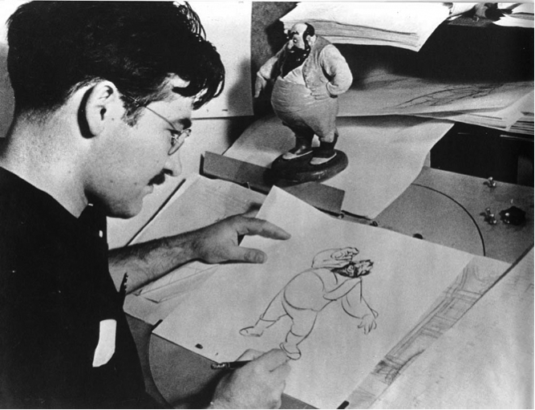
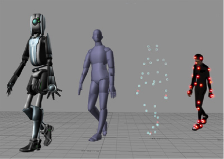
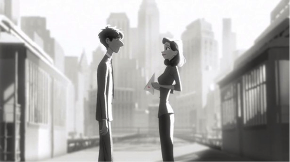

Modern Techniques
Overview
Throughout the years, innumerable approaches to creating animated films have arisen. While each differs in technical difficulty and the quality of their outputs, they all are unique and ubiquitous methods to creating animation.
Traditional Animation (Hand-Drawn Animation)
Traditional animation (also known as hand-drawn animation or cel animation) was the process used for the creating of hand-drawn animated films in the 20th century. The process utilizes cels
, or transparent cellulose acetate sheets, that are designed to be drawn upon, then laid over other cels to be photographed. This allows for drawings to be reused without having to re-draw the components of each frame individually.[1]
However, with the advent of computer-assisted animation processes, the traditional cel animation process became obsolete by the beginning of the 21st century. Today, drawings and backgrounds are usually scanned or even directly drawn into a computer system. Animators use specialized software programs to color the drawings and simulate camera movement and effects. Post-production processes allow the film to be output to several delivery formats, such as digital video, or the now outdated 35 mm film.[2]
It should be noted that the traditional form of cel animation (using acetate sheets) is incredibly time consuming and expensive due to the number of individual cels and backgrounds that need to be created. The more cels that are created, the more money must be spent on both materials and human labor. Because of this, many shows that have low budgets repeat backgrounds and frames in order to keep the costs down. Computer-assisted processes have lowered these costs by preventing the need for materials such as acetate sheets and specialized inks.
As hand-drawn animation is greatly influenced by the skill and artistic style of the animators producing the frames, the terms full
and limited animation
were coined to describe the quality of the animations produced:
- Full animation refers to, as stated by Casey Riffel, the
aesthetic and industrial aspects on display [such as those seen] in canonical Disney features
. Film studies courses use this term to describe the process of producing high-quality hand-drawn films that regularly use detailed drawings and realistic movement. Many of the Disney animated features are clear examples of full animation, as opposed to the morecartoon
styles of the Warner Bros. animation studio.[3] - Limited animation refers to the use of less detailed drawings and methods of movement; somewhat of a
quantity-against-quality
approach. In the 1940’s, several animators who left Disney formed the United Productions of America. In response to theoverly naturalistic
practices of Disney animation, these artists pioneered the aesthetic technique of limited animation—creating a flat and planar world to react against the world of Disneycartoon space
. Limited animation is primarily used in the production of cost-effective material for television (such as the work of Hanna-Barbera, Filmation, or web cartoons) where a large output of animations is required.[4]
Stop Motion Animation
Stop-motion animation, also known as stop frame animation, is a process used to describe animation created by the physical manipulation of real-world objects and photographing them one-frame at a time. This creates the illusion that the objects are moving on their own when the frames are played in a continuous sequence. Usually, figures with moveable joints or clay figures are often used in stop motion for their ease of repositioning, but other objects can be used to achieve a stop-motion effect.[5] Numerous sub-genres of stop-motion animation exist:
- Puppet animation is where stop-motion puppet figures are used in a constructed set. Examples include James and the Giant Peach (1996), Coraline (2009), and the TV series Robot Chicken (2005–present).
- Clay animation, more popularly known under the trademarked term of “claymation”, uses figures made of clay under the same principle of puppet animation. Examples include the Wallace and Gromet shorts (1989–present), the children’s TV show Shaun the Sheep (2007–present), and Chicken Run (2000).
- Cutout animation is a technique used to produce stop-motion animations using flat objects on a background. Today, as physically cutting out materials and producing each frame is too time-consuming for most production needs, the style of cutout animation is produced via computer-generated means with little to zero loss of stylization. A most notable example is South Park (1997–present), as the pilot episode was created using actual cutouts, but production of the series was later changed to computer-generated animation.
- Brickfilm is the term used to describe the use of Lego or similar “brick toys” in stop-motion.[6]
Computer Animation
2D Animation
Two-dimensional computer animation is the creation of moving pictures in a two-dimensional enviroment. Essentially the digital successor to traditional cel animation,
2D animation works off the same properties as previous forms of animation with a greatly enhanced rate of efficiency.[7] Animators generally create stick models
of the characters they are trying to present, and then use a keyframing method (explained in more detail below) to quickly set frames which are then automatically setup for processing by various animation programs.[8]
3D Animation
The concept of 3-dimensional computer-generated imagery (CGI) in animation contains a variety of techniques, with the central factor being that the animation is created using a computer, of course. CGI is used in films, television programs, and, increasingly nowadays, video games. Video games often use real-time computer graphics by utilizing dynamic camera movements in a three-dimensional space and using pre-defined, repetitive motions for the player (such as walking, punching, etc.).
While this animation takes less time to produce than previous traditional animation, an animator must overcome a steep learning curve to be able to tap into the full potential of most animation programs. Enough processing power to render such animations is required, and detailed animations can take extremely long times to render even with top-line equipment. However, the recent accessibility of CGI software and increasing computer speeds has allowed individual artists and small teams to produce professional films and games from pre-built home workstations.[9] Three-dimensional CGI animation is an evolution from basic cartoon animation into a realm that is able to represent realism as accurately as possible. Examples of such animation are The Polar Express (2004), Paperman (2012), as shown in the image above, and Frozen (2013).
In most three-dimensional animation systems, an animator creates a skeletal model, a wireframe of a character’s body anatomy. The skeletal model is used to compute the exact position and orientation of the character in a space. By changing the skeletal model from frame to frame (either by manually dragging the anatomical parts around the screen or by modifying the positioning variables of each of the parts), the animator can create motion as the frames are played continuously. This method is known as keyframe animation,
where animators can set the positioning variables, known as avars
(animation variables), of character models at strategic keyframes and let specifically designed animation programs automatically create the missing variables for the frames in-between.[10]
In contrast to the previously mentioned process of keyframe animation, a newer method known as motion capture
makes use of live actors that act out the sense as if they were the character to be animated. Actors wear specialized markers
which are used to track the positioning of the actor when his or her motion is recorded. The data gathered from these markers is mapped to a three-dimensional model so that the model performs the same actions as the actor.[11]
Both of these methods have their advantages—keyframe animation can produce motions that would be difficult or otherwise impossible to act out, while motion capture can easily reproduce the actions and subtleties of a particular actor.